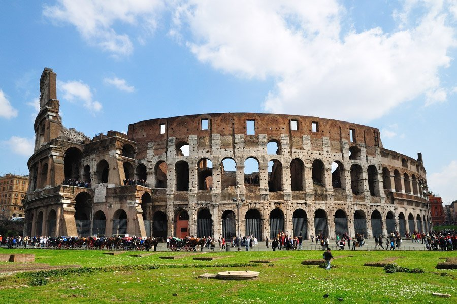
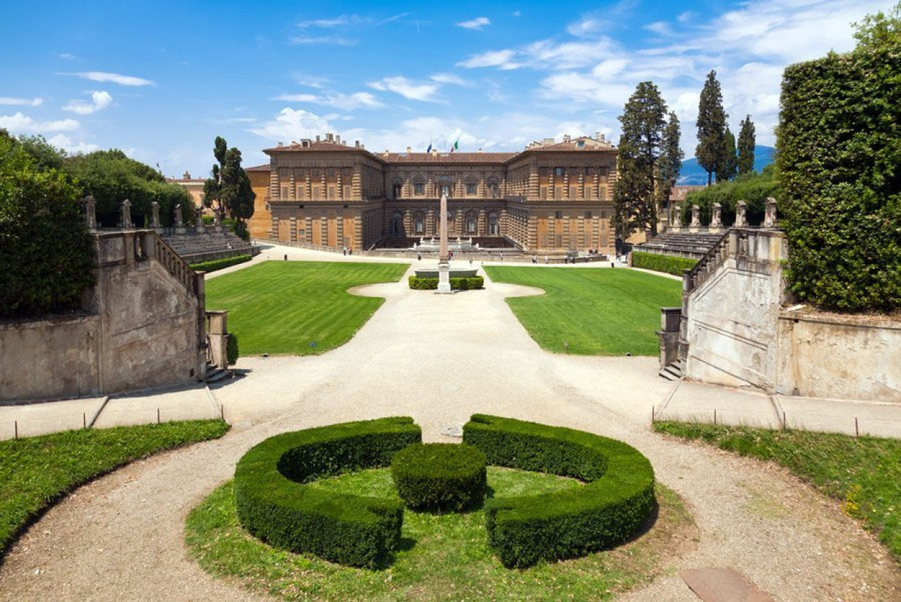
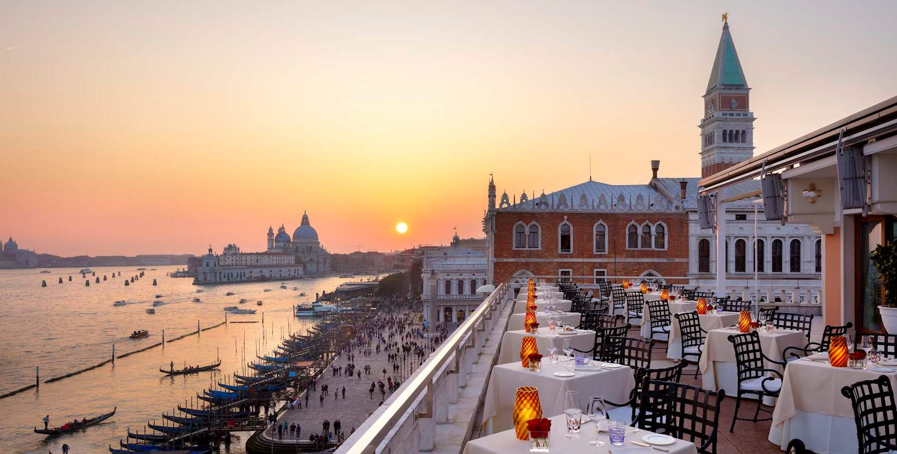

L'ITALIE
L'Italie est l'un de mes coups de coeur en raison de la beauté de ses villes comme Rome, Florence ou encore Venise ainsi que de sa gastronomie.
Quelques sites en Italie
-
Colisée,Rome

-
Jardin de Boboli,Florence

-
Restaurant avec vue,Venise

Le Colisée (Colosseo en italien), à l'origine amphithéâtre Flavien, est un immense amphithéâtre ovoïde situé dans le centre de la ville de Rome, entre l'Esquilin et le Cælius, le plus grand jamais construit dans l'Empire romain. Il est l'une des plus grandes œuvres de l'architecture et de l'ingénierie romaines
Le jardin de Boboli (en italien : Giardino di Boboli) est un parc historique de la ville de Florence, adjacent au palais Pitti, de la Porta Romana au Forte Belvedere. Le jardin, bâti sur la colline, qui reçoit chaque année plus de 800 000 visiteurs, est remarquable non seulement pour sa valeur historique et ses paysages, mais aussi pour sa collection de sculptures romaines et florentines des xvie et xviie siècles.
Surplombant le Grand Canal au cœur de Venise, le Gritti Palace offre l'une des vues les plus fascinantes de la ville lagunaire - de l'île de San Giorgio Maggiore aux monuments de Punta della Dogana et de la basilique Santa Maria della Salute en passant par la collection Peggy Guggenheim. Datant de 1475, ce palais noble et hôtel de luxe est un lieu d'exception d'art et d'élégance qui a conservé son caractère rassurant.